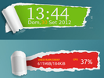

Conky Manager
Dieser Artikel wurde für die folgenden Ubuntu-Versionen getestet:
Ubuntu 14.04 Trusty Tahr
Zum Verständnis dieses Artikels sind folgende Seiten hilfreich:
Der Conky Manager  ist ein Programm, dass die Konfiguration von Conky über eine leicht zugängliche grafische Oberfläche (GUI) erleichtert. Des Weiteren werden fertige Designs (Themes) zur Verfügung gestellt, die neben der eigentlichen Conky-Konfiguration zusätzliche Schriftarten (Fonts), Grafiken und Skriptdateien enthalten. Wer Conky nicht kennt: damit lassen sich kleine Miniprogramme auf dem Desktop anzeigen – siehe Desklets. Die Programmsprache ist Englisch, was aber in der Praxis keine großen Probleme bereiten sollte.
ist ein Programm, dass die Konfiguration von Conky über eine leicht zugängliche grafische Oberfläche (GUI) erleichtert. Des Weiteren werden fertige Designs (Themes) zur Verfügung gestellt, die neben der eigentlichen Conky-Konfiguration zusätzliche Schriftarten (Fonts), Grafiken und Skriptdateien enthalten. Wer Conky nicht kennt: damit lassen sich kleine Miniprogramme auf dem Desktop anzeigen – siehe Desklets. Die Programmsprache ist Englisch, was aber in der Praxis keine großen Probleme bereiten sollte.
Nachfolgend eine Auswahl der mitgelieferten Designs (Themes), um einen Vorgeschmack auf die Möglichkeiten zu geben:
| MIUI |
| Max Conky |
|  |
| Torn Paper Clone |
| Gotham |
| LSD |
 |
| Seamod |
| CPU Panel |
| Nvidia Panel |
Installation¶
 Das Programm ist nicht in den offiziellen Paketquellen enthalten. Zur Installation kann man das "Personal Package Archiv" (PPA) [1] des Entwicklers Tony George nutzen. Zusätzlich erforderliche Programme werden automatisch als Abhängigkeit nachinstalliert.
Das Programm ist nicht in den offiziellen Paketquellen enthalten. Zur Installation kann man das "Personal Package Archiv" (PPA) [1] des Entwicklers Tony George nutzen. Zusätzlich erforderliche Programme werden automatisch als Abhängigkeit nachinstalliert.
PPA¶
In diesem PPA sind weitere Fremdpakete enthalten. Um Problemen mit den offiziellen Paketquellen vorzubeugen, wird empfohlen, das PPA nach der Installation wieder zu deaktivieren.
Adresszeile zum Hinzufügen des PPAs:
ppa:teejee2008/ppa
Hinweis!
Zusätzliche Fremdquellen können das System gefährden.
Ein PPA unterstützt nicht zwangsläufig alle Ubuntu-Versionen. Weitere Informationen sind der  PPA-Beschreibung des Eigentümers/Teams teejee2008 zu entnehmen.
PPA-Beschreibung des Eigentümers/Teams teejee2008 zu entnehmen.
Damit Pakete aus dem PPA genutzt werden können, müssen die Paketquellen neu eingelesen werden.
Nach dem Aktualisieren der Paketquellen kann das folgende Paket installiert [2] werden:
conky-manager (ppa)
 mit apturl
mit apturl
Paketliste zum Kopieren:
sudo apt-get install conky-manager
sudo aptitude install conky-manager
Bedienung¶
Bei Ubuntu-Varianten mit einem Anwendungsmenü erfolgt der Start [3] über den Menü-Eintrag "Zubehör -> Conky Manager", bei Unity über die Eingabe von conky-manager.
Die grafische Oberfläche ist in vier Reiter (Tabs) gegliedert:
"Theme" - Designauswahl
"Edit" - Feinkonfiguration
"Options" - Programmoptionen
"About" - Informationen zu Programm und Autor
| Designauswahl |
| Feinkonfiguration |
| Optionen |
Beim ersten Programmaufruf wird der Ordner ~/conky-manager im Homeverzeichnis erstellt, der einerseits einen Unterordner ~/conky-manager/themes für Designs beinhaltet (jedes Design erhält dort einen eigenen Unterordner) und andererseits ein Skript für den automatischen Start von Conky enthält.
Theme¶
Der erste Schritt wird in der Regel die Auswahl des gewünschten Designs sein. Zum An- und Abschalten dient eine Spalte mit Auswahlfeldern hinter den Designnamen. Prinzipiell dürfen auch mehrere Designs gleichzeitig aktiv sein. Manche der Designs bestehen aus mehreren Komponenten (Widgets), die dann bei Bedarf in der unteren Fensterhälfte einzeln de- oder aktiviert werden können. Wem die mitgelieferten Designs nicht ausreichen, kann sich dem Deluxe Conky Theme Pack  widmen, das zahlreiche weitere Designs enthält.
widmen, das zahlreiche weitere Designs enthält.

Edit¶
Hier können die Voreinstellungen eines Designs angepasst werden. Nach Auswahl des jeweiligen Designs können einzelne Parameter wie beispielsweise die Größe, die Platzierung auf dem Desktop oder die Transparenz geändert werden. Des Weiteren können auch das Zeitformat (12- oder 24-Stundenanzeige) und die zu verwendenden Netzwerkschnittstellen – falls das verwendete Design davon Gebrauch macht – eingestellt werden.
Wenn man ein Design anpasst, braucht dieses nicht aktiv bzw. sichtbar zu sein. Das Programm blendet automatisch eine Vorschau ein. Änderungen werden abschließend mit der Schaltfläche "Apply Changes" übernommen oder mit "Discard" wieder verworfen.
Options¶
Dieser Reiter enthält nur drei Optionen. Zum einen kann festgelegt werden, ob Conky automatisch nach der grafischen Anmeldung gestartet werden soll. Zum anderen kann hierüber Conky wieder beendet werden. Als dritte Möglichkeit können weitere Designs installiert werden, die an der Dateiendung .cmtp.7z (conky manager theme pack) erkennbar sind. Dabei handelt es sich um komprimierte Archivdateien im Format 7z, die auf Wunsch vorab mit einem Archivmanager begutachtet werden können. Wer eigene Designs erstellen will, findet auf der Projektseite weitere Informationen zur Struktur dieser Dateien.
Autostart¶
Für den automatischen Start von Conky legt der Conky Manager den Programmstarter ~/.config/autostart/Conky.desktop an. Dieser Programmstarter verweist auf die Datei ~/conky-manager/conky-startup.sh, die dann die konkreten Startbefehle enthält. Deaktiviert man den Autostart wieder, wird nur der Programmstarter entfernt.
Problembehebung¶
Transparenz fehlt¶
Am besten sehen Desklets aus, wenn sie transparent auf dem Desktop erscheinen. Erscheint stattdessen ein Fenster mit schwarzem Hintergrund, lässt sich meist über "Edit -> Transparency" Abhilfe schaffen (Optionen durchprobieren).
Links¶
Conky Manager auf Launchpad
- Fehlerberichte
Designs:
Deluxe Conky Theme Pack
- umfangreiche Sammlung weiterer DesignsGold&Grey Modified
 - Design mit Wetterinformationen
- Design mit WetterinformationenChalkboard
- Kreidetafel-Design mit Wetterinformationen
Conky - Hauptartikel
Desklets
 Programmübersicht
Programmübersicht
- Erstellt mit Inyoka
-
 2004 – 2017 ubuntuusers.de • Einige Rechte vorbehalten
2004 – 2017 ubuntuusers.de • Einige Rechte vorbehalten
Lizenz • Kontakt • Datenschutz • Impressum • Serverstatus -
Serverhousing gespendet von